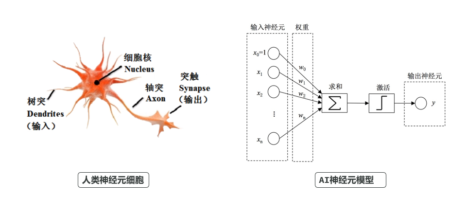
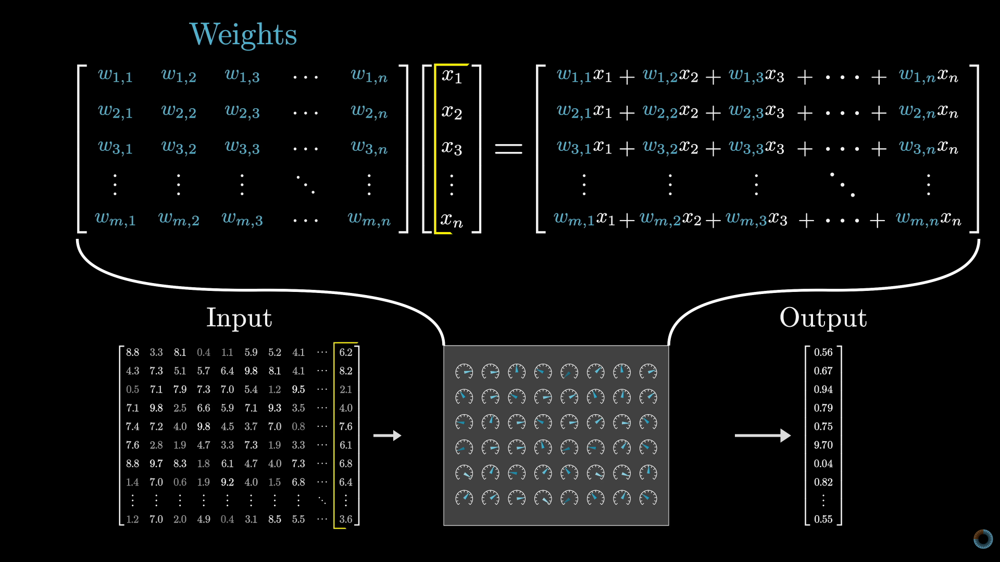

模型的训练
正在读取本章记录下次复习：—
请通过“启动学习站.cmd”进入，才能写入数据库。
前面我们说过，AI的神经网络模型就是在模仿人类的神经元：

你给它输入一些参数，最终它经过计算返回一个结果。因此从某种意义上，你可以把模型看做是一个函数。
这就类似：y = ax + b，这个函数有两个参数a和b，当a和b确定时，这个函数就能表示一条直线。输入一个x，一定能得到一个结果y
当然，模型这个“函数”要复杂的多，其参数不是两个，而是可能达到千亿规模：

因此它表示的不是一条直线，而是表示人类复杂的语言系统。
模型训练的过程，就是求模型参数的过程，类似于求解函数参数。已知直线上两个点的坐标，就能求出这条直线对应的a和b的值。
不过，大模型这个“函数”要复杂的多，其参数规模高达数千亿，模拟的也不是一条直线，它需要的“点”也是天文数字，因此根本就不可能精确计算出每一个参数的值。
所以，模型的训练更像是在猜答案：
-
先给模型参数设定为随机值
-
然后输入一个参数，再把模型计算的结果与预期的正确结果做对比
-
如果不对就调整参数，直到正确为止
这里的输入参数和预期结果就是所谓的训练数据（平面上的“点”）。不断的给模型提供新的训练数据，根据计算结果不断调整模型的参数，直到模型的计算能够与大多数的训练数据吻合，那么模型的训练就完成了。
大语言模型的训练就是拿海量的人类语言文字作为训练数据，不断调整模型参数，使其与人类的语言文字系统拟合。
但问题来了，人类的语言文字是如何参与数学运算的呢？